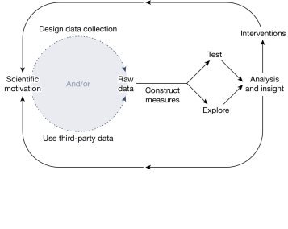
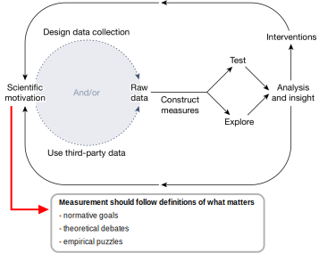
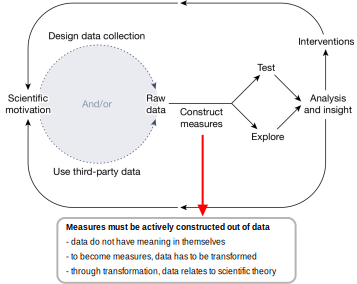
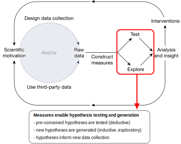
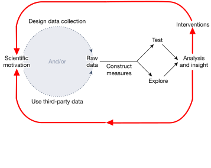
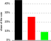
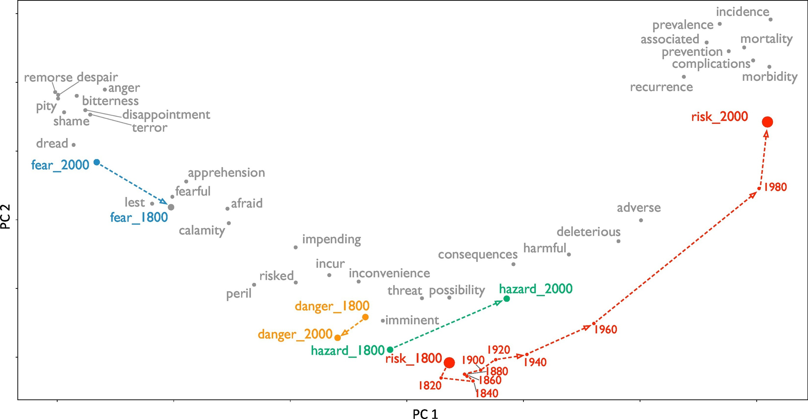
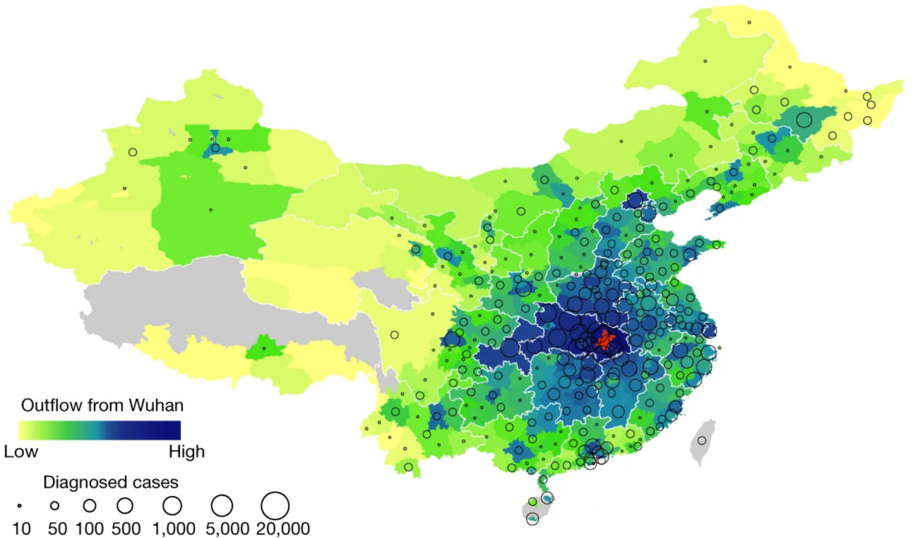
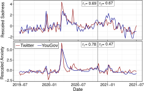
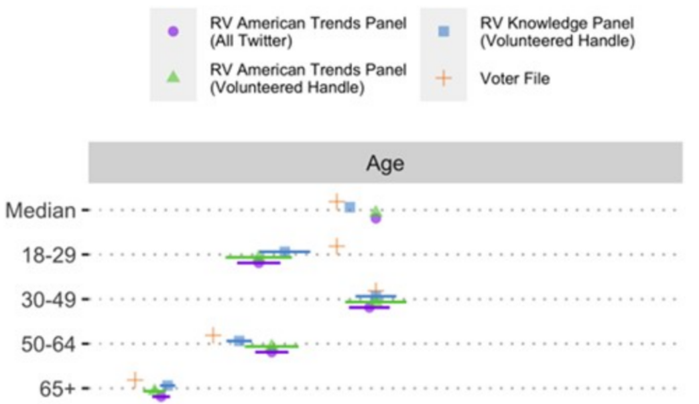

Jana Lasser
TU Graz
Foundations of Computational Social Systems
Central principles of measurement
Adapted from Lazer et al. 2021: Meaningul measures of human society in the twenty-first century
Central principles of measurement
Adapted from Lazer et al. 2021: Meaningul measures of human society in the twenty-first century
Central principles of measurement
Adapted from Lazer et al. 2021: Meaningul measures of human society in the twenty-first century
Central principles of measurement
Adapted from Lazer et al. 2021: Meaningul measures of human society in the twenty-first century
Central principles of measurement
Adapted from Lazer et al. 2021: Meaningul measures of human society in the twenty-first century
Issues with measurement: Reflexivity
Imagine this poll is posted shortly before an election:
How would you expect voters of black to react to the poll?
How voters of red? How voters of green?
Issues with measurement: Reflexivity
Imagine this poll is posted shortly before an election:
Simon 1954: Bandwagon and Underdog Effects and the Possibility of Election Predictions
Reflexivity
Humans actively change the world they are observing by acting on the knowledge gained → self-fulfilling prophecy.
Measurements can distort the phenomena they are designed to measure.
Observer effects

Observer effects
The olden days:
Observer effects
The olden days:
What kind of observer effects can we encounter in digital data collection?
Observer effects
The olden days:
What kind of observer effects can we encounter in digital data collection?
Performative behaviour
Obfuscation
Self-censoring
Observer effects
What kind of observer effects can we encounter in digital data collection?
Performative behaviour
Obfuscation
Self-censoring
In which ways could the distribution of observer effects be systematically biased?
Observer effects
What kind of observer effects can we encounter in digital data collection?
Performative behaviour
Obfuscation
Self-censoring
In which ways could the distribution of observer effects be systematically biased?
Number of followers
Technical skills
Political opinion
Algorithmic confounding
Systematic algorithmic biases
Example: The performativity of networks
Sudden changes in algorithms
Example: Changes in a recommender system
Algorithm "reflexivity"
Example: The Parable of Google Flu
Further reading: Wagner et al. 2021: Measuring algorithmically infused societies
The ambiguity of human expressions
The ambiguity of human expressions
Human language is drifting: Words might change meaning, become dog whistles and new words might be created.
There are advances in automated sarcasm detection (see for example Hazarika et al. 2018) but detecting sarcasm, irony and hyperbole in text remains notoriously hard.
The context of a text might completely change it's meaning.
What contexts can you think of that are relevant for social media?
The meaning of measures
The meaning of measures
Goal: measure a theoretical concept (infection risk, media consumption, physical activity, ...).
To approximate the concept we need to extract meaning from the raw data available to us. We do this by constructing measures.
There will be slippage between construct and concept.
Constructs and even concepts will be unstable in space and time.
Ways forward: Triangulating measures
Ways forward: Linking data sources
Ways forward: Updating models and measures
Established constructs might have drastically changed and need to be updated to match current social realities (example: voter interview questionnaire).
Many data sources offer continuous data streams. This gives the opportunity for continuous evaluation.
Summary
→ Reflexivity (self-fulfilling prophecy, observer effects)
→ Algorithmic confounding
→ Ambiguity
→ Slippage
→ Instability
Grand summary
→ Weighing risks and benefits
→ Data sharing
→ Informed conset
→ Platforms/systems were not designed with research in mind
→ Out data sources suffer from many biases
→ Platforms and usage contexts change constantly
→ Central principles of measurement
→ Issues with measurement (reflexivity, algorithmic confounding, ambiguity, slippage, instability)